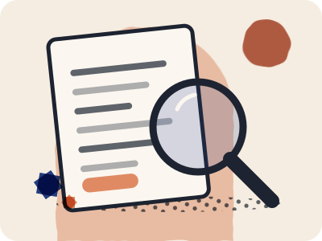

Every fact we publish
38 evidence records are cited on this site. Each shows its status, when it was reviewed, where we use it and where it comes from.

| Subject | What we state | Status | Reviewed | Used on | Sources |
|---|---|---|---|---|---|
| Airport trains to Casa Port | Some airport trains also run to Casa Port | Unconfirmed | 7 Oct 2026 | Casablanca airport to the city, day and night | Wikipedia (French), ONCF |
| Airport trains, ONCF summer 2026 plan | hourly from 06:00 to 23:00, until 13 September | Unconfirmed | 30 Sep 2026 | Casablanca airport to the city, day and night | ONCF, Echos Plus, H24info, La Relève |
| Airport trains, Ramadan 2026 timetable | hourly from 05:40 to 22:55 | Unconfirmed | 30 Sep 2026 | Casablanca airport to the city, day and night | LesEco.ma, La Vie éco |
| Aérobus journey and stops | About 30 minutes to the centre; Place des Nations Unies, Parc de la Ligue Arabe, Casablanca Finance City, Technopark and Casanearshore | Unconfirmed | 7 Oct 2026 | Casablanca airport to the city, day and night | Le Brief, Industries du Maroc, Maroc Hebdo |
| Aérobus stops at the airport | outside Arrivals at the main exit, at stops marked on the forecourt | Unconfirmed | 30 Sep 2026 | Casablanca airport to the city, day and night | Casablanca airport (ONDA) |
| Casa Voyageurs / ONCF passenger procedures | online, at station counters and at ticket machines | Source-checked 28 Sep 2026 | 28 Sep 2026 | Catching your train at Casa Voyageurs | ONCF, ONCF, page 2 |
| Casa Voyageurs / ONCF passenger procedures | shown on your phone or printed | Source-checked 28 Sep 2026 | 28 Sep 2026 | Catching your train at Casa Voyageurs, Casablanca airport to the city, day and night, Casablanca to Marrakech by train | ONCF |
| Casa Voyageurs / ONCF passenger procedures | electronic departure boards and staffed ONCF welcome points | Source-checked 28 Sep 2026 | 28 Sep 2026 | Catching your train at Casa Voyageurs | ONCF |
| Casa Voyageurs / ONCF passenger procedures | from a bridge above the tracks | Unconfirmed | 24 Sep 2026 | Catching your train at Casa Voyageurs | ONCF |
| Casa Voyageurs to Marrakech dated timetable sample | 2 h 54 min; 14:43, arriving 17:37 (2 h 54 min) | Source-checked 28 Sep 2026 | 28 Sep 2026 | Casablanca to Marrakech by train, Understand your options. Travel with confidence. | ONCF |
| Casablanca airport rail access | 50 MAD; 50 MAD 2nd class · 70 MAD 1st class; About 06:50 to 22:50; varies by season; About 30 minutes; Station below Terminal 1, reached from arrivals; from about 06:50 to 22:50; below Terminal 1, reached from the arrivals hall | Unconfirmed | 28 Sep 2026 | Casablanca airport to the city, day and night, Understand your options. Travel with confidence. | ONDA |
| Casablanca airport taxis | Shown on a fare list in Terminal 1; 24 hours; Desk on the arrivals forecourt; run 24 hours; the airport taxi fares are displayed on a sign in Terminal 1 and at a desk on the arrivals forecourt | Unconfirmed | 30 Sep 2026 | Casablanca airport to the city, day and night | Casablanca airport (ONDA) |
| Casablanca airport terminal shuttle | a free shuttle bus links the two terminals | Unconfirmed | 30 Sep 2026 | Casablanca airport to the city, day and night | Wikipedia (French) |
| Casablanca Aérobus | 50 MAD; 50 MAD flat fare; Every 25–40 minutes, day and night; Terminal 2, then Terminal 1; Cash, bank card or rechargeable card; every 25–40 minutes, day and night; from Terminal 2 and Terminal 1 to Casa Port, through the central boulevards | Source-checked 28 Sep 2026 | 28 Sep 2026 | Casablanca airport to the city, day and night, Understand your options. Travel with confidence. | Casabus, Casablanca airport (ONDA), maroc.ma, government portal |
| Casatramway / Casabusway fares | 8 MAD; 14 MAD | Source-checked 28 Sep 2026 | 28 Sep 2026 | Casablanca tram and busway fares, Understand your options. Travel with confidence. | Casa Tramway |
| Casatramway / Casabusway rechargeable card | 15 MAD for the card, then 6 MAD per journey | Source-checked 28 Sep 2026 | 28 Sep 2026 | Casablanca tram and busway fares | Casa Tramway |
| Casatramway / Casabusway validation | validate when you enter, when you exit, and when you enter during a connection | Source-checked 24 Sep 2026 | 24 Sep 2026 | Casablanca tram and busway fares | Casa Tramway |
| Dar El Bacha museum | Tuesday–Sunday 10:00–18:00, closed Monday | Source-checked 28 Sep 2026 | 28 Sep 2026 | If Jardin Majorelle is sold out, Your first Marrakech trip | Fondation nationale des musées |
| Dar El Bacha museum | 60 MAD for foreign visitors | Source-checked 28 Sep 2026 | 28 Sep 2026 | If Jardin Majorelle is sold out, Your first Marrakech trip | Fondation nationale des musées |
| Declaring foreign currency | there is no limit on what you bring in, but cash worth 100,000 MAD or more must be declared to customs on arrival, and you need that declaration to take it out again | Unconfirmed | 30 Sep 2026 | Entry checks: start with your documents, not someone else's experience | Office des Changes |
| Dirham banknotes at the border | no more than 2,000 MAD in dirham notes | Unconfirmed | 30 Sep 2026 | Entry checks: start with your documents, not someone else's experience | Office des Changes |
| Jardin Majorelle | Tickets sold online; sold online, through the ticket shop linked from the garden’s own homepage | Source-checked 28 Sep 2026 | 28 Sep 2026 | Jardin Majorelle: tickets, hours and nearby museums, Your first Marrakech trip | Jardin Majorelle |
| Jardin Majorelle | Daily 08:00–18:30, last entry 18:00; daily 08:00–18:30, last entry 18:00 | Source-checked 28 Sep 2026 | 28 Sep 2026 | Jardin Majorelle: tickets, hours and nearby museums, If Jardin Majorelle is sold out, Your first Marrakech trip | Jardin Majorelle |
| Jardin Majorelle access | makes a general statement about access for visitors with reduced mobility | Unconfirmed | 28 Sep 2026 | Jardin Majorelle: tickets, hours and nearby museums | Jardin Majorelle |
| ONCF assistance booking | free help boarding and leaving the train for travellers with reduced mobility, booked 48 hours ahead at a station or on 2255 | Source-checked 28 Sep 2026 | 28 Sep 2026 | Catching your train at Casa Voyageurs | ONCF |
| ONCF change availability | depends on seats being available on the new train, and you pay any fare difference | Source-checked 28 Sep 2026 | 28 Sep 2026 | Casablanca to Marrakech by train | ONCF |
| ONCF fare flexibility | non-flex, semi-flex and flex fares; non-flex cannot be exchanged or refunded | Source-checked 28 Sep 2026 | 28 Sep 2026 | Casablanca to Marrakech by train | ONCF |
| ONCF luggage | 1.2 m × 0.6 m × 0.4 m | Source-checked 28 Sep 2026 | 28 Sep 2026 | Catching your train at Casa Voyageurs, Casablanca to Marrakech by train | ONCF |
| ONCF machine payment | Card only at ONCF ticket machines; bank cards only, not cash | Source-checked 28 Sep 2026 | 28 Sep 2026 | Catching your train at Casa Voyageurs, Casablanca airport to the city, day and night | ONCF |
| ONCF online cancellation timing | up to 30 minutes before departure | Source-checked 28 Sep 2026 | 28 Sep 2026 | Casablanca to Marrakech by train | ONCF |
| Petit taxis and the airport | may not go to the airport, which is outside their city area; grand taxis serve it | Unconfirmed | 30 Sep 2026 | Casablanca airport to the city, day and night | La Vie éco |
| Pierre Bergé Museum | Daily 08:30–18:00, last entry 17:30 | Source-checked 28 Sep 2026 | 28 Sep 2026 | Jardin Majorelle: tickets, hours and nearby museums, If Jardin Majorelle is sold out, Your first Marrakech trip | Jardin Majorelle |
| Registering a prepaid SIM | record the identity of anyone buying a prepaid SIM, and cards without it are deactivated | Unconfirmed | 30 Sep 2026 | Choose a connection that works for you | La Vie éco, CIO Mag |
| Ride apps and the law | carrying paying passengers without a transport licence, or in a private car, is an offence | Unconfirmed | 30 Sep 2026 | Casablanca airport to the city, day and night | TelQuel, Médias24, H24info |
| Uber in Morocco | resumed service in Casablanca and Marrakech on 27 November 2025, with licensed transport vehicles and drivers only | Unconfirmed | 30 Sep 2026 | Casablanca airport to the city, day and night | TelQuel, Médias24, Le Desk |
| US travel advisory, Morocco | Level 2, “Exercise increased caution”, reissued 21 April 2025 | Source-checked 28 Sep 2026 | 28 Sep 2026 | Prepare with current information | US State Department |
| Villa Oasis private garden | Closed Wednesday | Source-checked 28 Sep 2026 | 28 Sep 2026 | Jardin Majorelle: tickets, hours and nearby museums, Your first Marrakech trip | Jardin Majorelle |
| YSL Museum closing time | 10:00–18:00, last entry 17:30, closed Wednesday; 140 MAD | Source-checked 28 Sep 2026 | 28 Sep 2026 | Jardin Majorelle: tickets, hours and nearby museums, If Jardin Majorelle is sold out, Your first Marrakech trip | Musée YSL Marrakech, Musée YSL Marrakech, page 2 |
Source-checked means we read the operator’s or authority’s own page on that date. Unconfirmed means our sources are indirect or incomplete. Field-checked, once it appears, means we saw it ourselves on that date.